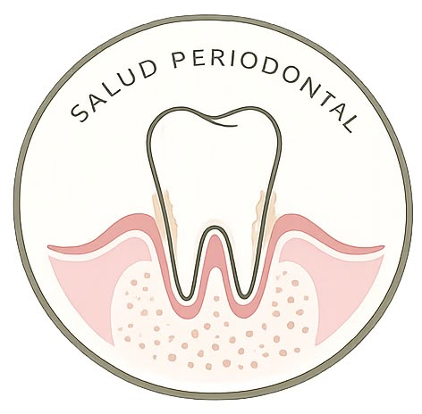
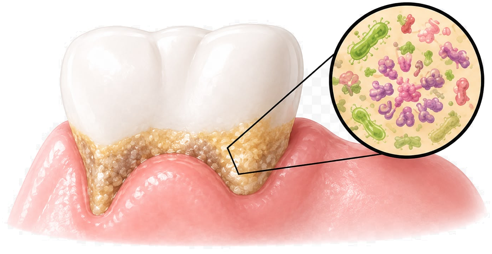
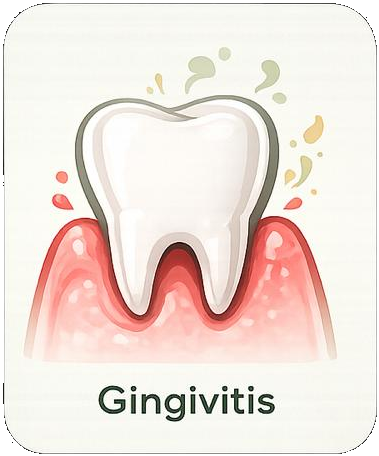
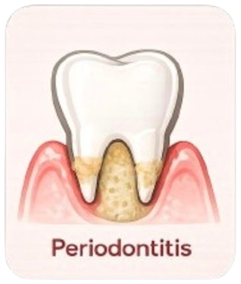
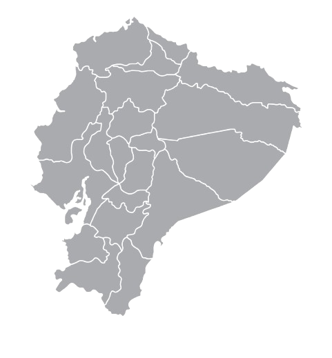

Tema 1
Tus encías son la base
de una sonrisa sana.
Las encías hacen mucho más que sostener los dientes. Cuando están sanas, ayudan a proteger los tejidos que rodean cada diente y permiten mantener una buena función y estética.
¿Qué es la salud periodontal?
Las encías, el hueso, el ligamento periodontal y el cemento radicular trabajan juntos para mantener los dientes firmes. Cuando todos estos tejidos están sanos, hablamos de salud periodontal.
Una buena salud periodontal significa:
¿Qué es la enfermedad periodontal?
Es una infección e inflamación causada principalmente por la acumulación de biopelícula bacteriana alrededor de los dientes. Si no se controla, puede afectar las encías y, con el tiempo, los tejidos que sostienen los dientes.

Diferencia entre gingivitis y periodontitis
Gingivitis

- Inflamación de las encías.
- Puede haber sangrado.
- No existe pérdida del hueso que sostiene al diente.
- Es reversible con una buena higiene y tratamiento profesional.
❤️🩹 Periodontitis

- Es una enfermedad más avanzada.
- Además de inflamación, existe pérdida de hueso y ligamento periodontal.
- Puede producir movilidad dental.
- Si no se trata, puede ocasionar pérdida de dientes.
de los adultos presentan alguna forma de enfermedad periodontal — muchas veces sin darse cuenta, porque en sus etapas iniciales no suele doler.
Tema 2
Prevalencia en Ecuador y el mundo

Distribución por provincias en Ecuador
En el mundo
Las enfermedades periodontales son de las enfermedades crónicas más frecuentes. La periodontitis severa afecta aproximadamente al 10% de la población mundial.
En Ecuador
Diversos estudios muestran que la gingivitis y la periodontitis son frecuentes tanto en adolescentes como en adultos, especialmente con higiene oral deficiente.
Mayor riesgo
- Adultos mayores
- Personas que fuman
- Personas con diabetes
- Quienes tienen mala higiene oral
Video: Introducción y estadísticas
Qué es la enfermedad periodontal, gingivitis y periodontitis, y su prevalencia en Ecuador y el mundo. [Video pendiente]
Tema 3
¿Por qué es importante cuidar las encías?
Mantienen los dientes en su lugar
Los tejidos periodontales sostienen cada diente.
Protegen frente a infecciones
Una encía sana actúa como barrera frente a bacterias.
Conservan tu sonrisa
Mantienen una buena estética y función.
Facilitan la masticación
Permiten comer con comodidad.
Señales de alerta
¿Qué hacer si aparecen estos signos? Mejora tu higiene oral, acude al odontólogo y no esperes a que aparezca dolor.
Causas y factores de riesgo
Causa principal
🦠 Biopelícula bacteriana — es la principal causa de las enfermedades periodontales inducidas por placa.
Factores de riesgo
¿Todos los factores causan periodontitis? No. Los factores de riesgo aumentan la probabilidad, pero la principal causa es la acumulación de biopelícula.
Tema 4
Biopelícula y cálculo dental
🦠 Biopelícula
Es una capa blanda formada por microorganismos que se adhiere constantemente sobre los dientes. Si no se elimina mediante una adecuada higiene oral, puede producir inflamación de las encías.
🪨 Cálculo
Es la biopelícula que, con el tiempo, se endurece al mineralizarse con los minerales presentes en la saliva. Una vez formado, ya no puede eliminarse con el cepillo y necesita ser retirado por un profesional.
| Biopelícula | Cálculo |
|---|---|
| Blanda | Dura |
| Se elimina con cepillado e higiene interdental | Requiere limpieza profesional |
| Se forma diariamente | Se desarrolla cuando la biopelícula permanece sin remover |
¿Cómo prevenirlos?
Cepillado dos veces al día
Hilo dental o cepillos interdentales
Enjuague bucal cuando sea indicado
Controles odontológicos periódicos
Video: Causas, biopelícula y cálculo dental
Por qué es importante cuidar las encías, causas, factores de riesgo, biopelícula y cálculo. [Video pendiente]
Video resumen: todo sobre salud periodontal
Un repaso de todo lo visto en esta sección, en un solo video. [Video pendiente]